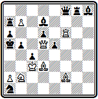
Мат в 5 ходов
Это одна из его труднейших и сложнейших задач с интересным центральным вариантом: 1. Cg6 (слон открывает вертикаль «d» для своего ферзя и одновременно перекрывает вертикаль «g» для черной ладьи; грозит 2. К:с4+ Кра4 3. Фd1+) 1... Cg4 (защищаясь от угрозы, черный слон сам перекрывает свою ладью и освобождает белого слона для дальнейшей атаки) 2. Се8 Фе7 (парируя угрозу 3. Сb6+ Кр:b6 4. Фс6+)
3. Ф:с4 Кс2 4. Фа4+ bа 5. Кс4#.
После 1862 г. Кэмпбелл опубликовал считанное число произведений. К числу лучших работ композитора принадлежит задача № 80.
№80
Д. Кэмпбелл «Иллюстрейтид лондон ньюс» 1868
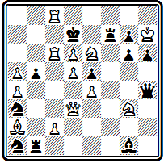
Мат в 4 хода
Замысел ее состоит в осуществлении перекрытия Новотного, осложненного критическим ходом одной из тематических черных фигур. Решение открывается неожиданным отскоком коня в угол 1. Kh1, создающим угрозу 2. Фh3. Защита 1... Лb3 позволяет осуществить труднонаходимую жертву ферзя для отвлечения ладьи за критическое поле: 2. Фf1 Л:f1. после чего следует комбинация Новотного 3. Кf2 с матами конем на с5 или f8. Сложнейшее построение, с использованием чуть ли не всех белых и
черных фигур, глубокая идея, осуществляемая эффектными ходами, удаляющими белые фигуры от поля боя, весьма затрудняют решение задачи.
В примере №81 интересна идея в игре белых фигур.
№81
Д. Кэмпбелл «Английские шахматные задачи» 1876
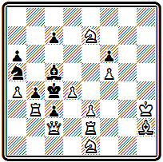
Мат в 4 хода
Вступлением 1. Cd6 перекрывается черный слон, чтобы сохранить коня е7 для создания угрозы 2. Kd3, и освобождается поле h2 для ладьи. В варианте 1... С:d6 она будет играть на это поле, осуществляя бристольскую идею освобождения линии для своего ферзя: 2. Лh2 (грозит 3. Фе2+; 2... С:h2 3. Kd3) 2...С:е7 3. Фg2 с матами 3... Кр:b3 4. Фа2# или 3... ~ 4. Фg8#.
Мы познакомились с творчеством крупнейших английских композиторов переходного периода. Для их творчества характерно отсутствие четко оформленного единого направления. Отдельные проблемисты работали в совершенно различных стилях. Это была пора исканий, завершенных лишь следующим поколением проблемистов, которое избрало основное направление и создало английскую школу в шахматной задаче.
Итоги развития композиции в Англии за первые три четверти века были подведены большим сборником «Английские шахматные задачи», выпущенным Д. и В. Пирс в 1876 г. (20). Из приведенных в книге 608 задач примерно по 40 процентов приходится на трехходовки и четырехходовки, только около 7 процентов — на двухходовки и остальное — на многоходовки.
Глава 5
ЗАДАЧНАЯ КОМПОЗИЦИЯ В ГЕРМАНИИ И АВСТРИИ
Чемпион международных конкурсов — Конрад Байер.
Открытие новых идей. Новотный. Плахутта. Зеебергер.
Конкурсы Западногерманского шахматного союза
Второй очаг развития шахматной композиции в середине XIX века находился в странах Центральной Европы — Германии и Австрии. Творчество композиторов начала века Доллингера, Зильбершмидта, Мендгейма, новаторов 40-х годов Бреде и Андерсена подготовило почву для дальнейших успехов композиторов этих двух стран. Этому, как и повсюду, содействовала шахматная периодическая печать, возникшая в Германии несколько позже, чем в Англии и Франции. Отдел в «Нейе лейпцигер цейтунг» начал выходить в 1843 г. В 1846 г. был основан ежемесячный журнал «Дейче шахцейтунг», издающийся до наших дней и являющийся сейчас старейшим периодическим шахматным изданием мира. В Австрии развился талант первого фактического (официально такого титула у композиторов никогда не было) чемпиона мира Конрада Байера, блиставшего исключительными конкурсными достижениями.
В период с 1856 г., когда был проведен первый международный конкурс «Эра», до конца 70-х годов состоялось десятка полтора подобных больших конкурсов. Они проводились либо шахматными изданиями, либо организациями и обычно приурочивались к большим международным событиям. Присуждение проводилось по системе посылок. В числе победителей оказывались композиторы разных стран.
1. «Эра», Лондон, 1856: I — К. Байер; II — Ф. Хили; III — Д. Кэмпбелл.
2. Конкурс I Американского шахматного конгресса, Нью-Йорк, 1857: I — Р. Вильмерс; II — К. Байер; III — С. Лойд.
3. «Режанс», Париж, 1860: I — К. Байер; II — Т. Эрлен.
4. Конкурс конгресса Британской шахматной ассоциации. Бристоль, 1861: I — Ф. Хили; II — К. Байер; III — А. Понграч; IV — В. Митчесон.
5. Конкурс Лондонского международного шахматного конгресса, 1862: I — К. Байер; II — И. Плахутта; III — А. Новотный; IV — Г. Макартур.
6. «Паламед франсэ», Париж, 1865: I —Д. Ламуру; II — К. Байер; поч. отз.— И. Котц и К. Коккелькорн, Ф. Клетт.
7. Конкурс Британской шахматной ассоциации, 1866: I — К. Байер; II — И. Котц и К. Коккелькорн; III — И. Клинг.
8. Конкурс Парижского международного шахматного конгресса, 1867: I — К. Байер; II —С. Лойд; III —Э. Гродеманж.
9. «Вестминстер пейпер», 1872: I — И. Минквиц; II — Д. Аббот; III — Э. Фрибороу.
10. Конкурс Британской шахматной ассоциации, 1873: I —С. Серенсен; II — К. Байер; III — Д. Финлинсон.
11. «Вестминстер пейпер», 1874: I — И. Бергер; II — Г. Эндрюс; спец. пр.— К. Байер.
12. «Стратежи», Париж, 1875: I — К. Байер; II — Г. Валле; III—Э. Гродеманж.
13. «Нуова ривиста дель скакки», Рим, 1876: I — Ф. Шрюфер; II — К. Байер; III —А. Абела.
14. Конкурс Парижского международного шахматного конгресса, 1878: I — И. Бергер; II— Ф. Гейерштам; III — С. Лойд; IV — К. Байер.
Из списка видно превосходство спортивных достижений К. Байера. Во всех конкурсах он неизменно был в числе победителей.
Свой творческий путь Байер начал с разработки старой идеи жертвы белых фигур для извлечения черного короля, завершающейся красивым правильным матом.
Великолепным памятником «старой школы» является его многоходовка №82, названная «бессмертной».
|
№82 К. Байер «Эра» 1856 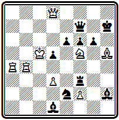 Мат в 9 ходов |
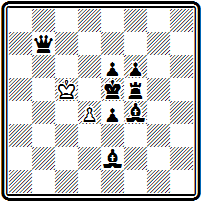 Финальная позиция |
В ходе решения белые жертвуют все свои фигуры, чтобы завлечь черного короля в западню, где единственная уцелевшая пешка объявляет мат.
1. Лb7 Ф:b7 2. С:g6+ Kp:g6 3. Фg8+ Кр:f5 4. Фg4+ Kpe5 5. Фh5+ Лf5 6. f4+ С:f4 7. Ф:е2+ С:е2 8. Ле4+ de 9. d4#.
В подобном же стиле составлена задача Байера из посылки, получившей в конкурсе «Эра» 1856 г. 1 приз:
|
К. Байер «Эра» 1856 I приз 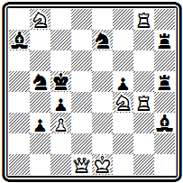 Мат в 5 ходов |
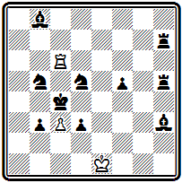 Финальная позиция |
Здесь после жертвы всех фигур белые дают картинный мат ладьей с симметричным блокированием черного короля собственными фигурами:
1. Л8g6 C:b8 2. Фd5+ К:d5 3. Kd3+ cd 4. Лс4+ Kp:с4 5. Лс6#.
Другие варианты проще 1... К:с3 2. Фd6+ Крb5 3. Фа6+; 1... Kd4 2. Ф:d4+ Kpb5 3. Фd7+ и т. д. Угроза 2. Лс6+.
Совсем в ином плане составлена задача № 83. Основа ее содержания — тонкие маневры ферзя, приводящие к отвлечению черных ладей. В начальном положении трудно предположить, что белые
№83
К. Байер «Режанс» 1860 I приз
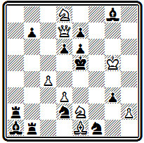
Матв 5 ходов
1. Ф:b7 (жертвуя ферзя — а без жертв не обходится ни одна задача Байера,— белые уничтожают сильную пешку, грозит 2. Кс6#)
1... Ла6 2. Фg2 (теперь угрожает 3. С:g3+ ~ 4. Ф:g3#, надо брать слона) 2... Л:e1 3. Фа8 (ферзь снова предлагает себя в жертву и становится в двойную засаду: по восьмой горизонтали для создания угрозы 4. Kf7+ С:f7 5. Фh8# и по линии «а» за черную ладью; приходится брать коня е2 для освобождения поля d4) 3... Л:е2 4. Кс6+ Л:с6 5. Ф:a1#.
Стихией Байера были сложные, трудные для решения четырехходовые и пятиходовые задачи. Богатое содержание; варианты, заканчивающиеся правильными матами; скрытые тихие ходы; неизменные жертвы — этими элементами Байер владел в совершенстве.
Задача № 84 - одно из сложнейших произведений композитора. Она получила специальный приз как лучшая проблема Лондонского конкурса 1862 г.
№84
К. Байер Лондонский конкурс 1862 I приз

Мат в 5 ходов
Приведем основные варианты, заканчивающиеся правильными матами:
1. Kg:f4 de 2. Фе6 fe 3. Кс5+ Kpd4 4. Kf:e6+ Kpd5 5. Ce4#;
1... К:d3+ 2. С:d3+ Kp:e3 3. Kd5+ Kp:d3 4. Фh7+ f5 5. Ф:f5#;
1... Kf3+ 2. gf+ Kp:e3 3. Ke5 C:e5 4. Kg2+ Kp:f3 5. Kh4#.
Пример № 85 по построению гораздо проще, но решение содержит немало тонкостей.
№85
К. Байер «Паламед франсэ» 1865 II приз
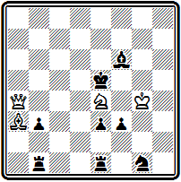
Мат в 4 хода
Главная из них — второй ход белых после 1. Kg3 Cg5. Черные освободили королю поле f6, и никакие насильственные средства цели не достигают. Решает только тихий, на первый взгляд нелепый, ход королем 2. Kph5. Грозит 3. Фе4+ Крf6 4. Фе7# — король атакует поле g6. Бегство черного короля не спасает: 2... Кpf6 3. Фd7, и неизбежен мат ферзем с d6 или е7; 2... Кре6 3. Фс6+ Kpf7 4. Фg6# — чистый, но неэкономичный мат. У черных есть еще одна хитрая зашита, найти которую не так легко, но в которой как раз и заключена идея задачи— 2... Cd8. Слон переходит на другой конец диагонали, чтобы не оказаться перекрытым при ходе короля на f6, но теперь следует заключительная жертва ферзя: 3. Фf4+ Kp:f4 4. Cd6# — эффектный правильный мат. Другой вариант 1...Кре6 2. Фе8+ Се7 3. Ф:е7+ Kpd5 4. Фе4# прост, но также кончается правильным матом.
Парижский конкурс 1867 г. отличался своеобразным условием. В посылке, которая должна была состоять из 6 задач на мат от 3 до 5 ходов, половина задач могла быть неоригинальных, из числа ранее опубликованных и даже премированных. Байер в свою посылку, удостоенную I приза, в частности, включил две последние композиции.
Значительно меньшее место в творчестве Байера занимают трехходовки, но и в этом жанре он имел интересные достижения. В качестве примера приведем позицию № 86.
№86
К. Байер Конкурс британской шахматной ассоциации 1866 I приз
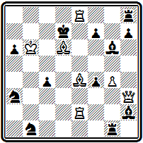
Мат в 3 хода
В главном варианте после принятия жертвы ферзя 1. Фh5 С:h5 красивый тихий ход 2. Се7 приводит к двум эффектным матам: 2... Кр:е8 3. Сс6# и 2... Л : е8 3. Cf5#, первый из которых правильный. Интересный чистый мат получается в варианте 1... Кр:е8 2. Cf5+ Kpd8 3. Сс7#. Остальные варианты проще: 1... С:е4 2. Ф:f7+, 1... Л:е8 2. Сс6+ (угроза).
Наконец, совсем единицами насчитываются у Байера двухходовки. Они не пользовались в то время популярностью и в конкурсные посылки не включались. Задача № 87 отмечена призом в одном из первых конкурсов, где эта традиция стала нарушаться.
№87
К. Байер «Дейче шахцейтунг» 1866 I приз
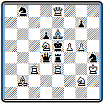
Мат в 2 хода
Эффектное вступление 1. Ке7 выключает белого ферзя по вертикали ее» и приводит к цугцвангу черных.
В этом конкурсе, как и в некоторых других национальных состязаниях, Байер выступал под псевдонимом «Дракон Рабей», который, как легко видеть, образуется перестановкой букв из его настоящего имени: Конрад Байер. В истории шахмат известны и другие случаи подобного образования псевдонимов. В частности, настоящая фамилия популярного шахматного литератора, автора учебников и сборников задач Дюфреня (Dufresne) — Е. S. Freund.
Байер продолжал участвовать в конкурсах и после 70-х годов. Последним его выступлением явилось участие в большом конкурсе английского журнала «Чесе мансли» 1891— 1895 гг. Однако успехов он уже не имел. Сборник задач Байера был подготовлен И. Шиндлером, но так и не увидел света.
Венский композитор Р. Вильмерс добился наибольшего успеха, завоевав I премию за посылку на конкурсе 1 Американского шахматного конгресса 1857 г. Одна из задач посылки приведена на диаграмме № 88.
№88
Р. Вильмерс Нью-Йоркский конкурс 1857 I приз
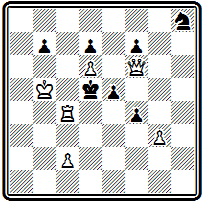
Мат в 4 хода
Легкое экономичное построение, эффектный первый ход, ставящий черных в положение цугцванга, несколько тихих вариантов — таковы особенности проблемы, весьма необычные для того времени.
1. Крb6 Кр:с4 2. Ф:е5 Крb4 3. Фа5+(3. Фc5+); 1... fg 2. Лg(h)4 e4 3. Kpb5!; 1... Kg6 2. Ф:f7+ Kp:d6 3. Лс5.
Стремление к построению нескольких вариантов вообще характерно для Вильмерса.
Очень трудная для решения задача №89 также содержит ряд вариантов с тихими ходами и интересными тактическими моментами.
№89
Р. Вильмерс Лондонский конкурс 1862
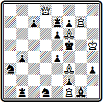
Мат в 4 хода
Вступление 1. Лg3 создает угрозу 2. С:е4+ ~ 3. Фd3 или 3. Фd4. Защититься от нее конями или ладьей b1 нельзя, например 1... Лb3 2. С:е4+ Kpf4 3. Фd4 и неизбежен один из матов 4. Се5# или 4. Лg4#. Наиболее острый вариант возникает при 1... Kpf4. Теперь 2. С:е4 опровергается ответом 2... Лd7, но зато становится возможной жертва ферзя 2. Фd3, так как после 2... ed проходит красивый тихий маневр 3. Сс6 с матами 3... ~ 4. Лf3# или 3... Кр:g3 4. Се5#. До хода короля на f4 этот маневр опровергался ответом 3... Кр:f6. Черные могут выключить белого ферзя, играя 1… Лd7, но тогда появляется возможность тихого маневра 2. Фg8 с использованием освобождения вертикали «g» белой ладьей на первом ходу. Грозит мат ферзем на g5 сразу на третьем ходу или (скажем, на 2... ef) после промежуточного 3. Фg4+. Не спасает освобождение поля е6 путем 2... е5 так как блокирование поля d7 черной ладьей позволяет дать мат с е5: 3. Фg5+ Кре6 4. Ф:е5# . Если же черные защищаются, освобождая поле е6 уже на первом ходу — 1… е5, то белые используют блокирование поля е5 новым тихим, маневром: 2. Cg5 Кре6 3. С:е4 Лd7 4. Фf6# или 2... ef 3. Л:f3+. Очень содержательная и тонкая задача, слабым местом которой является пассивность белой ладьи f1.
Пример №90 интересен главным вариантом с тихими вторым и четвертым ходами белых:
№90
Р. Вильмерс «Иллюстрирте цейтунг» 1877 I приз
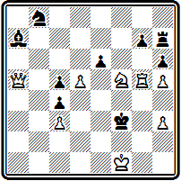
Мат в 5 ходов
1. Kd6 (угроза 2. Фа2) 1... hg 2. Фа2 Kpg3 3. Фg2+ Kpf4 4. К:c4 или 2... Kpf4 3. Фh2+ Кре3 4. Kpe1. Дополнительный вариант: 1... Kpf4 2. Лg4+ Кре5 3. Kf7+ Kp:d5 4. Лd4+ (можно и 4. Фс7).
Период 50-х годов можно смело назвать периодом открытий. Именно в эту пору творила целая плеяда композиторов, нашедших неисчерпаемые идейные богатства современной задачи и выступивших пионерами в их разработке. Имена первооткрывателей стратегических идей вошли в историю композиции рядом с открытыми ими темами.
«Тема Новотного» — это едва ли не первая задачная тема, с которой знакомится начинающий композитор на первых шагах своего обучения. Австрийский композитор Антон Новотный представил ее в 1854 г. в задаче № 91.
№91
А. Новотный «Лейпцигер иллюстрирте цейтунг» 1854
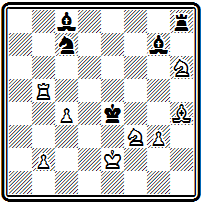
Мат в 3 хода
После 1. Лf5 Лf8 белые достигают мата в 2 хода эффектной жертвой слона на точке пересечения линий действия черных слона и ладьи: 2. Cf6 С:f6 3. Лf4# и 2... Л:f6 3. Ле5#.
Такое взаимное пересечение ладьи и слона с пожертвованием фигуры на точке пересечения и составляет содержание темы Новотного.
Долгое время считали, что приведенная задача была первым воплощением темы Новотного. Однако в последующем были найдены более ранние примеры ее представления, в частности, приведенная выше задача Бреде (№ 43). Это не умаляет значения открытия Новотного, который многократно возвращался к теме и обратил на нее внимание многих композиторов. Новотный, в частности, первым осложнил идею критическим ходом одной из играющих черных фигур.
Интересное развитие темы дано также в задаче №92-
№92
А. Новотный «Лейпцигер иллюстрирте цейтунг» 1855
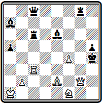
Мат в 3 хода
где взаимное перекрытие проходит не только на первом ходу 1. Лс5, но и повторяется при ответе 1... С:с5 — 2. Cg4 С:g4 3. Фg3# или 2... Л:g4 3. Фh2#. В этом варианте большую роль играет перекрытие ладьи по вертикали «с», ибо попытка 1. Cg4? опровергается ответом 1... Л:с3. В варианте 1... Л : с5 используется перекрытие слона 2. Фf2+ Лg3 3. Ф:g3# или 2... Крh3 3. Фh2#.
Задачи на тему взаимного перекрытия входили в посылки, с которыми Новотный участвовал в конкурсе «Эра» и в Лондонском конкурсе 1862 г.
В последнем его посылка получила III приз. Приведем одну из композиций этой посылки (№93).
№93
А. Новотный Лондонский конкурс 1862 III приз
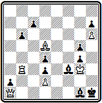
Мат в 4 хода
Первым ходом 1. Лb5 белые становятся в засаду за своего слона и грозят 2. С:f3+ gf 3. Л:g5. Черные могут перекрыть ладью 1... с5, но тогда 2. Са8! ставит черных в положение цугцванга. На движение пешки 2... с4 решает 3. Л:g5, а в случае 2... С:а8 находится эффектная жертва ладьи 3. Лb1! — грозит 4. Л:g1#, если же 3... аbФ, то 4. Ф:а8#.
В теме Новотного проходит взаимное перекрытие разноходящих фигур: слона, играющего по диагонали, и ладьи, передвигающейся по фронталям. Могут ли взаимно перекрывать друг друга одинаково ходящие фигуры, например две ладьи? Оказывается, могут. Такое перекрытие с пожертвованием белой фигуры на точке пересечения их линий действия осуществляется в теме Плахутты, названной так по имени австрийского композитора, представившего ее в 1858 г.
И. Плахутта «Лейпцигер иллюстрирте цейтунг» 1858
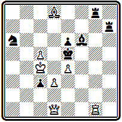
Мат в 4 хода
1. Фf3 К:c5 2. Лg7 Лg:g7 3. Cc7+ и 2... Лh:g7 3. Фg3+.
Позднее стало известно, что у Плахутты был предшественник— знаменитый Лойд (см. № 000).
В задаче № 94 тема осуществлена в усложненном виде с последующей тихой игрой белых фигур.
№94
И. Плахутта Лондонский конкурс 1862 IV приз
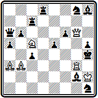
Мат в 5 ходов
Нельзя сразу l. Cd1 с угрозой 2. Ф:h5# из-за того, что поле d1 защищено ладьей d8. Нужно предварительно пожертвовать коня на точке пересечения линий действия ладей: 1. Kd7. Когда же черные возьмут коня ладьей с7—1... Лс:d7, хотя поле d1 по-прежнему защищено черными, ход 2. Cd1 становится возможным, так как ладья d8 перекрыта другой своей ладьей, а эта последняя привязана к защите поля е7: 2... Л:d1 3. Се7 К:е7 4. Лg4+. Аналогично при взятии коня другой ладьей оказывается перекрытой ладья с7, и белые делают те же тихие ходы, но в обратном порядке: 1... Л8:d7 2. Се7 Л:е7 3. Cd1 Лh7 4. Лg4+.
Очень любопытна позиция № 95 с маятникообразным движением ферзей:
№95
И. Плахутта «Лейпцигер иллюстрирте цейтунг» 1859
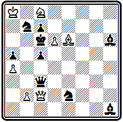
Мат в 5 ходов
1. Фh7 Фg7 2. Фd3 Ф:b2 (грозил мат на b5) 3. Фh7 Фg7 4. Фb1 Фb2 5. Ф:h1#.
И. Плахутта начал свою композиторскую деятельность в 1856 г. с задачи на тему Новотного. Большой активностью он не отличался. Последним его успехом был I приз в одном из австрийских конкурсов 1880 г.
Своеобразно творчество примыкающего к этой же группе австрийского композитора А. Цивинского. Правда, он не открыл ни одной темы, за которой сохранилось бы его имя, но его задачи отличаются насыщенностью содержания и глубоко осмысленными тактическими маневрами.
В примере № 96 интересно идейное содержание игры черных ладей.
№96
А. Цивинский «Иллюстрирте фамилиен журналь» 1861
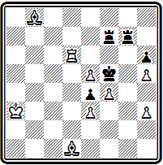
Мат в 5 ходов
После 1. Са4 белые грозят 2. Cd7+, пользуясь тем, что ладья f7, которая могла бы взять слона, сама прикована к защите поля f6 и мешает сделать это ладье g7. Черные защищаются отступлением ладьи f7, открывающим удар второй ладьи — 1... Лf8. Однако уход одной из ладей с седьмой горизонтали позволяет белым играть 2. Сb3, так как на 2... Ла7+ они теперь смогут брать ладью 3. С:а7, что прежде было невозможно из-за повторного шаха (1. Сb3 Ла7+ 2. С:а7 Л:a7+). От грозящего мата на е6 у черных единственная защита 2... Ле7, но при этом ладья переходит через f7, на котором она снова оказывается перекрытой своей второй ладьей. Белые делают выжидательный ход, закрываясь заодно от шахов, 3. Ла6, после чего черные в цугцванге. После вынужденного 3... Лff7 или 3. . .Лее8 решает возвращение белого слона в начальную позицию 4. Cd1. От угрозы 5. Cg4# в обоих случаях может защищать только ладья «f», так как другая ладья перекрыта, а тогда матует 5. Лf6#.
Тонкими маневрами белые заставили черную ладью g7 перейти через критическое поле f7, на котором затем ее перекрыла другая ладья. Здесь критический ход представлен в игре черных фигур, но инициатива его осуществления принадлежит белым, которые и используют его результат.
В «индийской задаче» (№ 54), где идея критического хода была воплощена впервые, этот ход осуществлялся в игре белых фигур, причем им же принадлежала инициатива его проведения.
В задаче №97 критическими ходами обеих тематических черных фигур осложнена тема Новотного.
№97
А. Байерсдорфер Конкурс британской шахматной ассоциации 1866
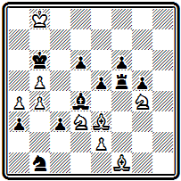
Мат в 5 ходов
После 1. Cg1 грозит 2. Ке3. Черные должны брать слона 1... С:g1 и переходить через критическое поле f2. Тогда 2. е4, угрожая отступлением коня d3 (скажем, 3. Кс5)с матом 4. а5. Черные должны брать другого слона ладьей и уже второй фигурой переходить через то же критическое поле f2 — 2... Л:f1. Но теперь можно вызвать взаимное перекрытие слона и ладьи на критическом поле после жертвы на нем коня: 3. Kdf2— тема Новотного. Дальше все ясно: 3… Л:f2 4. Ке3 или 3... С:f2 4. К:f6 с матом на следующем ходу.
Композиция № 98 явилась первым представлением так называемой темы Зеебергера, покоящейся на той же основе.
№98
И. Зеебергер «Иллюстрирте фамилиен журналь» 1860
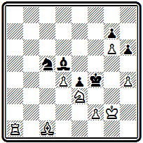
Мат в 4 хода
Суть ее в том, что здесь после критического хода и занятия критического поля используется не просто перекрытие, а запирание черной фигуры:
1. Ла8 С:а8 2. Са3 Кb7 3. Се7, и черные в цугцванге.
Слон в результате вынужденного критического маневра заперт в углу, а конь и пешка h6, делая ходы, позволяют белому слону дать мат.
В 1862 г. вышла в свет книга известного немецкого мастера и композитора Макса Ланге «Руководство по шахматной задаче» (21). Эта капитальная работа была первой попыткой дать общую теорию шахматной задачи. Здесь рассмотрены основные понятия и история композиции, дан анализ составных элементов задачи: позиции, содержания, идей. Наиболее интересна характеристика идей, которые Ланге делит на три группы:
1) практические идеи, связанные с отдельными стадиями партии —дебютом, миттельшпилем или эндшпилем;
2) искусственные идеи, подразделяемые автором на общие и связанные с особенностями игры фигур (в этом разделе надо отметить детальный анализ тактических моментов, обеспечивающих достижение цели, а также различных типов подготовительных планов; особенно интересна небольшая глава о «форпланах», которой автор заглядывает далеко вперед, в XX век, когда это понятие станет одним из основных элементов логических комбинаций);
3) систематические идеи, представляющие многократное, последовательное повторение какого-либо простого мотива. Книга обильно иллюстрирована —только на диаграммах приведено около 800 позиций и не меньшее количество дано в нотации. Здесь и обычные задачи, и условные, и задачи на обратный мат, и позиции из партий.
На фоне капитальной работы Ланге бледнеет другое объемистое сочинение «Антология шахматных задач», изданное в 1864 г. (22). Дюфрень ограничился только тем, что собрал более 800 задач и привел их краткие решения, без всяких комментариев.
В 50—60-х годах в Германии существовал ряд местных шахматных союзов. Первые немецкие конкурсы составления задач были организованы в начале 60-х годов в связи с конгрессами Западногерманского шахматного союза:
II, III и IV в Дюссельдорфе в 1862, 1863 и 1864 гг. (победители: в состязании 1862 г.— И. Зеебергер, в двух других — И. Бергер);
VI — в Кельне (1867 г.— I. И. Минквиц) и
VII — в Аахене (1868 г. — I. И. Дртина).
В 1868 г. состоялся конкурс Северногерманского шахматного союза в Гамбурге, где I приз завоевал И. Бергер. Он же вышел победителем в двух конкурсах, проведенных посте некоторого перерыва Западногерманским союзом во время X и XI конгрессов в Кельне в 1876 и 1877 гг., в соревновании, проведенном в 1876 г. Среднегерманским союзом в связи с конгрессом в Лейпциге и в международном конкурсе 1877 г., посвященном А. Андерсену.
В 1879 г. был основан единый Германский шахматный союз, который стал регулярно, раз в два года, проводить свои конгрессы, в программу которых входили также задачные конкурсы. К ним мы еще вернемся дальше.
Конкурсы Западногерманского союза сыграли большую роль в формировании стиля немецких композиторов, завершившегося в 80-х годах появлением немецкой школы в задачной композиции. В этих конкурсах выдвинулся и завоевал большое количество отличий известный теоретик и композитор Иоганн Бергер, который в дальнейшем выступил глашатаем принципов немецкой школы и дал их законченную формулировку.
Раннее творчество Бергера непосредственно примыкает к творчеству Байера и развивает некоторые его особенности.
Так, в задаче №99 главная игра проходит в варианте -
№99
И. Бергер Конкурс Западногерманского шахматного союза 1863 I приз
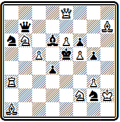
Мат в 4 хода
1. Фа8 К:с5 2. Ле3+ К:е3 3. С:d4+ Кр:d4 4. Фа1#.
Снова, как и у Байера, картинный мат с симметричным расположением основных фигур. Правильность мата нарушает не участвующий в нем слон.
В ряде своих ранних произведений Бергер допускал подобные нарушения экономичности мата. В дальнейшем при издании сборников своих работой перерабатывал почти все свои композиции и добивался большого технического совершенства, в частности правильности матовых позиций в главных вариантах.
Например, задачу №99 он перерабатывал дважды. Вот эти позиции, показывающие наглядно пути технического совершенствования большого мастера.
И. Бергер (редакция 1883 г)
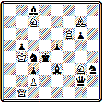
Мат в 4 хода
1. Фh1 Kf4 2. Лd6+ К:d6 3. С:e5+.
И. Бергер (редакция 1912 г)
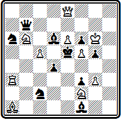
Мат в 4 хода
. 1. Фа8 К:с5 2. Ле3+ и т. д.
Задача № 000 также построена на эффектной матовой комбинации, осуществляемой в главном варианте.
№ 000
И. Бергер Конкурс Северогерманского шахматного союза 1868 I приз
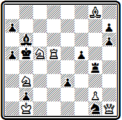
Мат в 5 ходов
После 1. Фh5 Л:g8 2. Kd4+ Крс4 3. Фd1 Кр:d5 4. Kde6+ проходят три экономичных, но не чистых мата ферзем при поддержке двух коней: 4... Крс6 5. Фd7#, 4... Крс4 5. Фb3# и 4...Кре5 5. Фd4#. Угрозы 2. Фе8+ и 2. Kd4+; например, 1... Крb4 2. Фе8 С:с5 3. К:с5 Крс3 4. Лd3+; 1... Лe4(g6) 2. Kd4+ Л:d4 3. Фе8+ ~ 4. Фа4#.
В 1883 г. автор переработал эту задачу в четырехходовку:
И. Бергер 1883
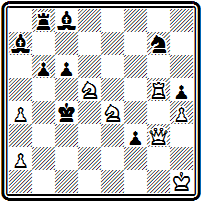
Мат в 4 хода
1. Ле5 Kpd4 2. Фе1 Кр:е5 3. Kef6 и т. д.
Одним из видных немецких композиторов того времени был И. Минквиц, который по своему стилю несколько отличался от других немецких и австрийских авторов. Для них характерно было наличие единственного главного варианта, в котором воплощалась основная идея.
В задаче № 000 мы видим два равноценных варианта, заканчивающихся правильными матами:
№ 000
И. Минквиц Конкурс Западногерманского шахматного союза 1867 I приз
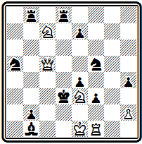
Мат в 4 хода
1. Л:f3 ef 2. Kd1 Лd4 3. Kf2+ Кре3 4. Kd5# и
1... Лd4 2. Фс3+ Кр:с3 3. Ked5+ Kpc4 4. Лс3#.